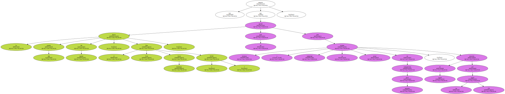
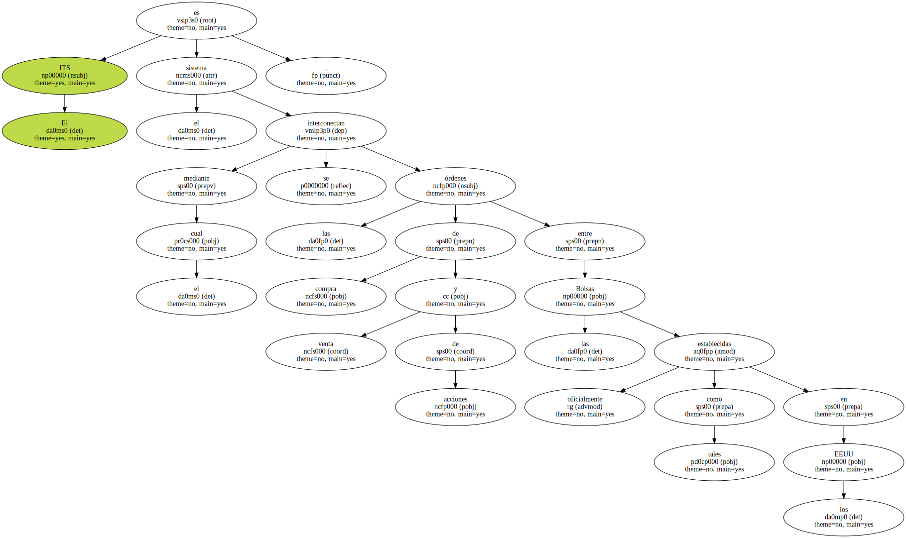
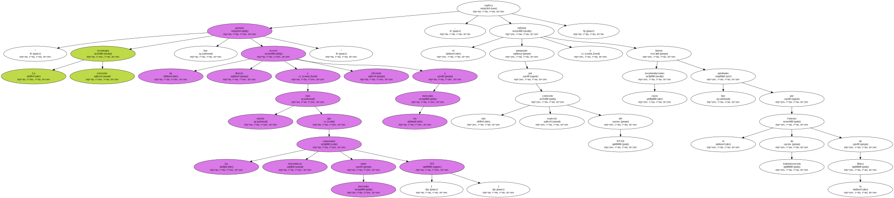
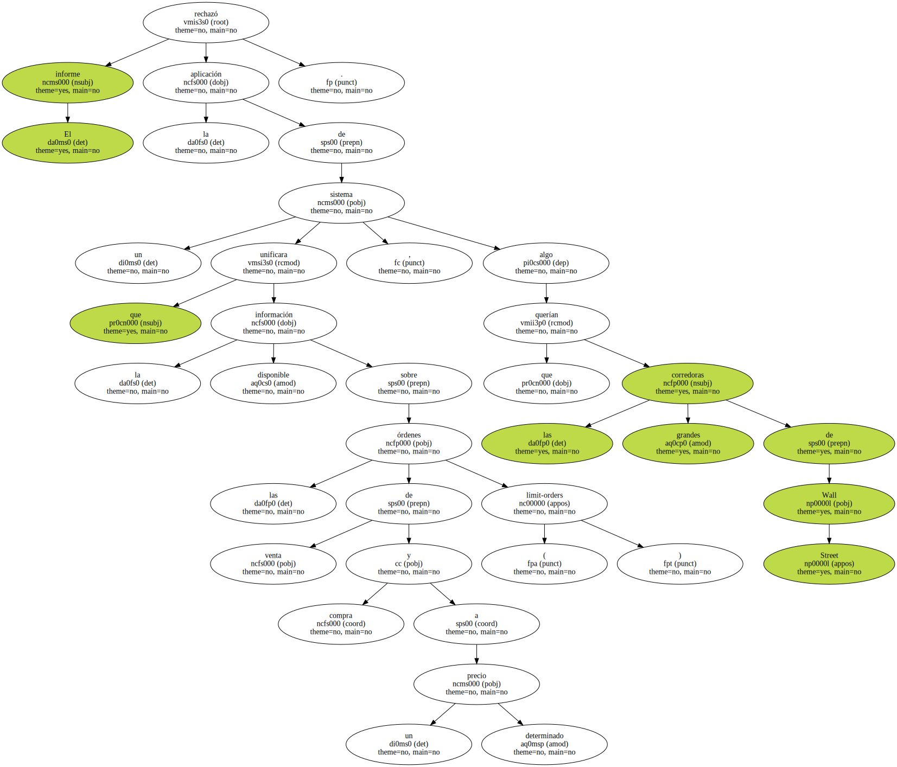
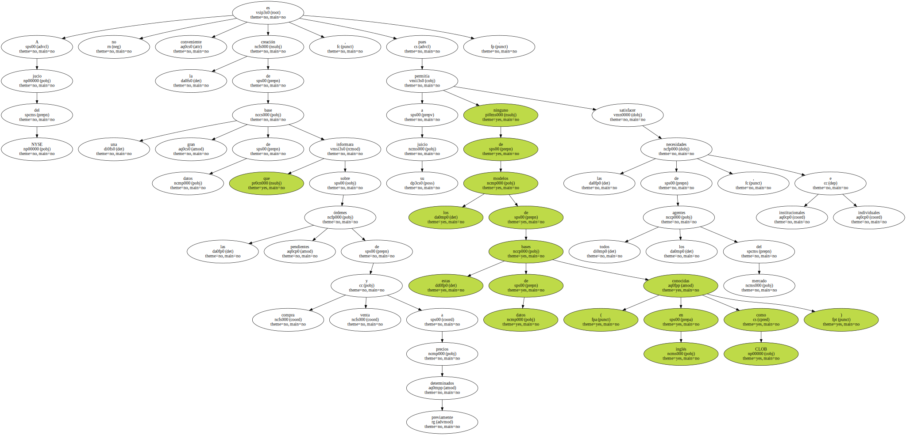
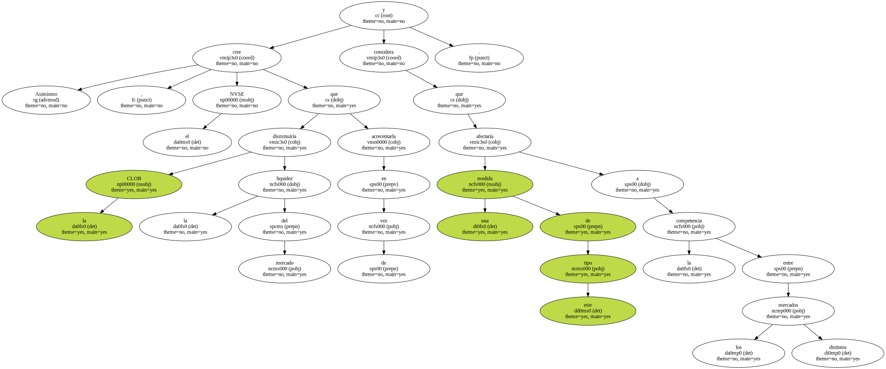
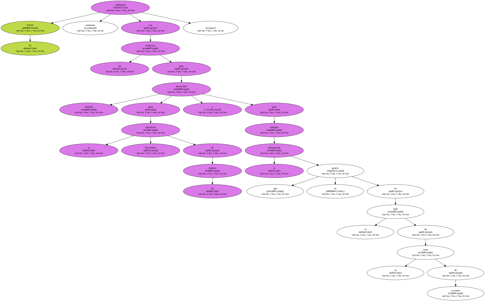
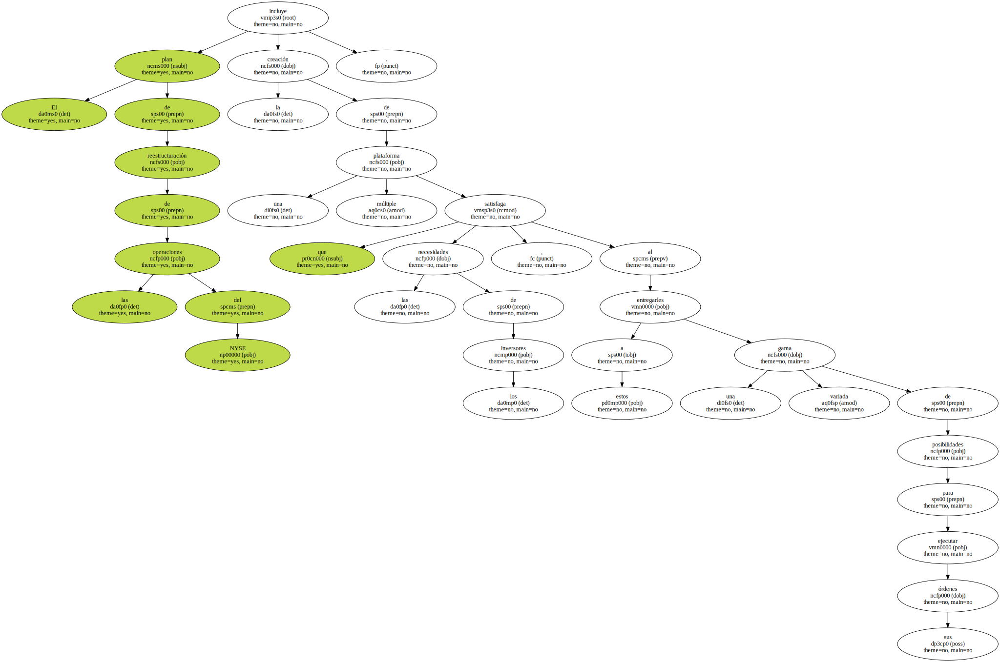
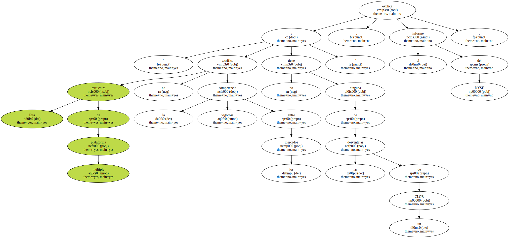

La Bolsa más grande del mundo , el New York Stock Exchange ( NYSE ) , anunció hoy que aprobó un plan para eliminar y reemplazar su actual sistema de transacciones entre mercados , conocida en inglés por las siglas ITS.
El ITS es el sistema mediante el cual se interconectan las órdenes de compra y venta de acciones entre las Bolsas establecidas oficialmente como tales en los EEUU.
Este sistema , a juicio de muchos agentes del mercado , es muy anticuado y no permite que se contabilicen las acciones que se negocian en las plataformas electrónicas , o ECN , que son Bolsas privadas no establecidas oficialmente bajo las mismas leyes que el NYSE , el AMEX o el Nasdaq.

" La tecnología existente hoy permite un acceso mucho más directo y eficiente a los mercados que las conexiones electrónicas entre mercados ( ITS ) " , explica el informe preparado por una comisión especial del NYSE y cuyas recomendaciones fueron aprobadas hoy por el Consejo de Administración de la Bolsa.
El informe rechazó la aplicación de un sistema que unificara la información disponible sobre las órdenes de venta y compra a un precio determinado ( limit-orders ) , algo que querían las grandes corredoras de Wall Street.
A jucio del NYSE no es conveniente la creación de una gran base de datos que informara sobre las órdenes pendientes de compra y venta a precios previamente determinados , pues a su juicio ninguno de los modelos de estas bases de datos ( conocidas en inglés como CLOB ) permitía satisfacer las necesidades de todos los agentes del mercado , institucionales e individuales.
Asimismo , el NYSE cree que la CLOB disminuiría la liquidez del mercado en vez de acrecentarla y considera que una medida de este tipo afectaría a la competencia entre los distintos mercados.
El NYSE continuará asimismo con sus esfuerzos para desarrollar sistemas para la ejecución electrónica de las órdenes y para entregar la información que se genera en el lado de la venta de acciones.
El plan de reestructuración de las operaciones del NYSE incluye la creación de una plataforma múltiple que satisfaga las necesidades de los inversores , al entregarles a estos una gama variada de posibilidades para ejecutar sus órdenes.
" Esta estructura de plataforma múltiple no sacrifica la vigorosa competencia entre los mercados y no tiene ninguna de las desventajas de un CLOB " , explica el informe del NYSE.
Richard Grasso , presidente del directorio del NYSE , dijo que las recomendaciones que adoptará la Bolsa permitirán construir un mercado " basado en la elección de los clientes respecto a la forma en cómo ellos tienen acceso y utilizan la transparencia , liquidez y profundidad sin paralelo del NYSE ".